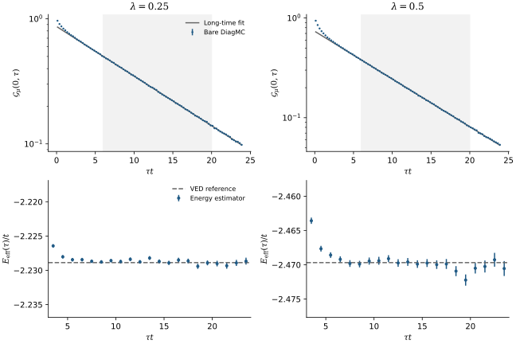
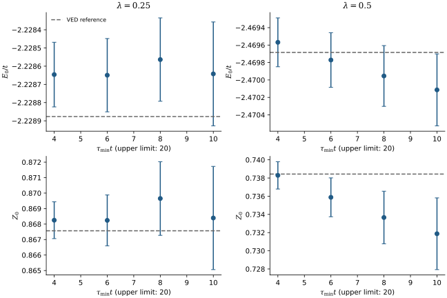
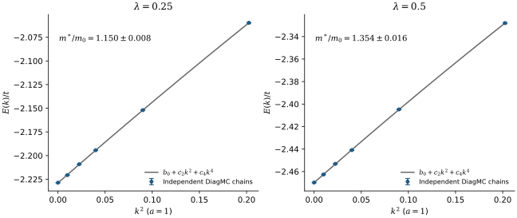
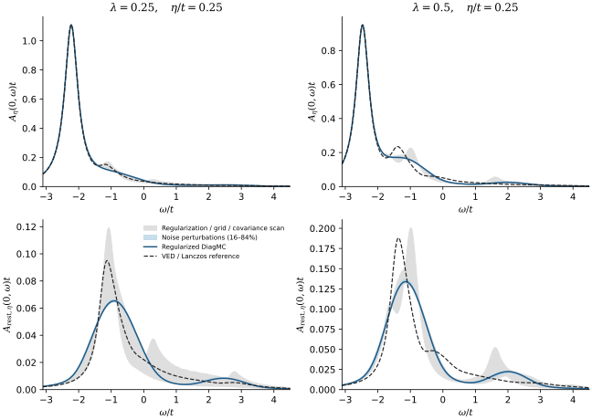
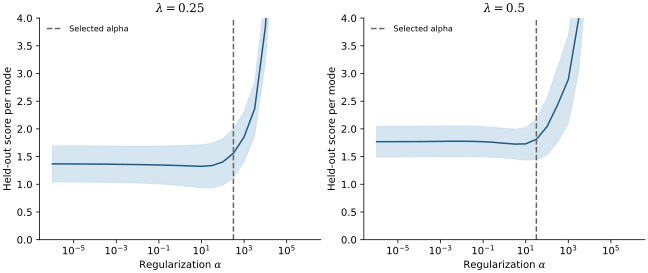

1D Holstein
bare DiagMC 计算结果
零温、单电子、无限晶格。计算日期：2026-09-18。
基态能量、准粒子权重和有效质量已完成本轮检验。谱函数已做初步重建，非相干部分尚未达到可靠的定量精度。
窄屏上的长公式和图可横向滚动；每张图都提供可放大的 SVG 和 PDF。
参数与主要结果
两组耦合分别对应 和 。能量相对于无电子、无声子的真空；自由电子带底为 ，自由质量为 。
| 0.25 | −2.22865 ± 0.00020 | 0.8682 ± 0.0016 | 1.150 ± 0.008 |
|---|---|---|---|
| 0.50 | −2.46977 ± 0.00031 | 0.7359 ± 0.0021 | 1.354 ± 0.016 |
图采样包含交叉声子线，内部动量连续分布在布里渊区，没有有限环或动量网格。每个耦合、每个动量使用四条链，每条包含 4,800 万个生产步，另有 50 万个热化步。
数据下载：主要结果 CSV · 完整分析摘要 JSON · 代码、原始块数据与报告 ZIP。
先在 提取 和
直接采样裸传播子的完整图展开。辅助参数取 或 ，外部虚时范围为 。这里的虚时上限是测量范围，并非有限温度的逆温度。
零阶图提供绝对归一化。令 为第 个虚时箱的访问数， 为所有虚时上的零阶访问数：
测得的是箱平均，因此长时间拟合保留了有限箱宽的精确修正：
主拟合使用 ，箱宽为 0.25。各箱共享归一化，拟合保留其协方差。误差由 block jackknife 计算，并比较三种块长。

{kind=link}

{kind=link}
增加小动量，计算有效质量
计算 ，这里的动量单位是弧度。每个点由独立的链采样，拟合保留四次项：
只用 并仍保留四次项，得到质量比 1.149 ± 0.015 和 1.373 ± 0.035，与六点拟合相容。六点拟合的 分别为 2.22 和 0.42，表中的统计误差没有按此数值缩放。

{kind=link}
数值检验与独立对照
自由电子、原子极限的完整传播子和有限跳跃的一阶展开均通过随机检验；原子极限实际访问了交叉图。详细平衡、伸缩雅可比、条件积分核和分析代码也通过了相应测试。
控制计算分别将 下移 0.15、虚时范围增至 32、阶数上限由 96 改为 48，结果与主计算相容。主计算最高访问阶数分别为 20 和 32；这些运行均未尝试越过阶数上限。
| 0.25 | −2.228876602217 | 0.8675672485 |
|---|---|---|
| 0.50 | −2.469684723933 | 0.7384350807 |
参考计算使用无限晶格的变分空间，比较了 12、14、16 代的基态结果。这里列出参考值是为了检验 Monte Carlo；主结果仍报告实际采样得到的数值和误差。
最后处理谱函数：初步重建
另做短虚时采样，并对外部虚时作条件积分，降低直方图噪声。重建使用非负权重、完整数据协方差和已知的谱矩；正则化强度由四条独立链的留出验证选择，参考谱只用于事后评估。方法背景可见解析延拓的交叉验证研究；这里实现的是非负 Tikhonov 重建。
图中统一使用 Lorentz 展宽 。它表示显示分辨率，不能解释为计算得到的准粒子寿命。对比参考谱，在 上的相对 误差为：
| 全谱 | 去掉基态极点后的谱 | |
|---|---|---|
| 0.25 | 4.3% | 32.6% |
| 0.50 | 9.7% | 36.1% |
当前非相干部分尚未通过精细谱形检验，不能据此确认激发峰的位置、峰宽或多峰结构。 正式的 仍取自前面的长虚时计算。 的谱拟合将极点能量移动了约 −2.71 个先验标准差，也提示了正则化偏差。

{kind=link}
参考谱另比较了 14、16、18 代变分空间以及 500/1000 次 Lanczos。相同展宽下，16→18 代的全谱差异小于 0.004%，明显小于上述延拓偏差。已约束未展宽谱的零阶、一阶和二阶矩；极点位移采用线性化处理，恢复非线性极点后最大矩残差约为 ，详细数值保存在分析摘要中。

{kind=link}